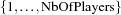

6 Scheduling a Golf Tournament
Problem Specification
There are 32 individually playing golfers who play in groups of 4, so-called foursomes. For every week of the golf tournament new sets of foursomes are to be compiled. The task is to assign foursomes for a given number of weeks such that no player plays with another player in a foursome twice.
Maximal Number of Weeks
The upper bound for the number of weeks is 10 weeks due to the following argument. There are pairing of players. Each foursome takes 6 pairings and every week consists of 8 foursomes, hence, every week occupies 48 pairings. Having only 496 pairings available, at most  weeks can be assigned without duplicating foursomes. Unfortunately, only assignments for 9 weeks could be found so far. Fortunately again, this assignment could only be found by solvers using set constraints. Other approaches, using linear integer programming, failed for this problem size.
weeks can be assigned without duplicating foursomes. Unfortunately, only assignments for 9 weeks could be found so far. Fortunately again, this assignment could only be found by solvers using set constraints. Other approaches, using linear integer programming, failed for this problem size.
Model
A foursome is modeled as a set of cardinality 4. A week is a collection of foursomes and all foursomes of a week are pairwise disjoint and their union is the set of all golfers. This leads to a partition constraint. Further, each foursome shares at most one element with any other foursome, since a golfer, of course, may occur in different foursomes but only on his own. Therefore, the cardinality of the intersection of a foursome with any other foursome of the other weeks has to be either 0 or 1.
Distribution Strategy
The distribution strategy is crucial for this problem.1 A player is taken and assigned to all possible foursomes. Then the next player is taken and assigned and so on. This player-wise distribution allows to solve instances of that problems up to 9 weeks. The approach, coming usually into mind first, to distribute a foursome completely, fails even for smaller instances of the problem.
Solver
The function Golf returns a solver to find an assignment for NbOfFourSomes foursomes per week and NbOfWeeks weeks duration. The number of players is computed from NbOfFourSomes and stored in NbOfPlayers. The auxiliary function Flatten is used to flatten a list of lists of variables. Its definition is necessary since the library function of the same name works only on ground terms.
The procedure DistrPlayers implements the player-wise distribution strategy. It tries to create for every player on every foursome a choice point by simply enumerating all players and iterating for each player over all foursomes.
The variable Weeks holds NbOfWeeks weeks. A week is a list of foursomes. A foursome is modeled as a set. All sets are subsets of  and have exactly 4 elements. Further, the sets modeling the foursomes of a week form a partition of the set . These constraints are imposed by the first ForAll loop.
The following nested loops (ForAllTail and ForAll) impose that every foursome shares at most one element with any other foursome of other weeks. Finally, the distribution procedure is called with a flattened copy of Weeks, i. e., a list of all foursomes.
declare
fun {Golf NbOfWeeks NbOfFourSomes}
NbOfPlayers = 4*NbOfFourSomes
fun {Flatten Ls}
{FoldL Ls fun {$ L R}
if R==nil then L
else {Append L R} end
end nil}
end
proc {DistrPlayers AllWeeks Player Weeks}
choice
case Weeks
of FourSome|Rest then
dis {FS.include Player FourSome} then
{DistrPlayers AllWeeks Player Rest}
[] {FS.exclude Player FourSome} then
{DistrPlayers AllWeeks Player Rest}
end
else
if Player < NbOfPlayers then
{DistrPlayers AllWeeks Player+1 AllWeeks}
else skip end
end
end
end
in
proc {$ Weeks}
FlattenedWeeks
in
Weeks = {MakeList NbOfWeeks}
{ForAll Weeks
proc {$ Week}
Week =
{FS.var.list.upperBound
NbOfFourSomes [1#NbOfPlayers]}
{ForAll Week proc {$ FourSome}
{FS.card FourSome 4}
end}
{FS.partition Week
{FS.value.make [1#NbOfPlayers]}}
end}
{ForAllTail Weeks
proc {$ WTails}
case WTails
of Week|RestWeeks then
{ForAll Week
proc {$ FourSome}
{ForAll {Flatten RestWeeks}
proc {$ RestFourSome}
{FS.cardRange 0 1
{FS.intersect
FourSome RestFourSome}}
end}
end}
else skip end
end}
FlattenedWeeks = {Flatten Weeks}
{DistrPlayers FlattenedWeeks 1 FlattenedWeeks}
end
end
Invoking the solver by {ExploreOne {Golf 9 8}} produces the following search tree.

The search tree has a depth of 200 which makes the problem a good candidate for recomputation. Invoking the search engine with a computation depth of one 2 requires 64.1 MB of heap memory. On the other hand an recomputation depth of 10 3 decreases the required heap memory to 19.3 MB.